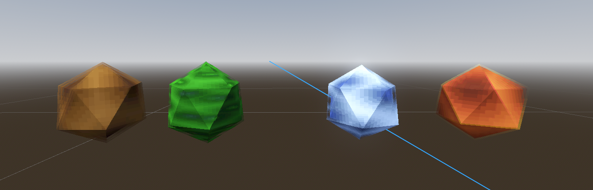

I push buttons, and I make free + open source virtual reality games
Table of Contents
- About
- Technical Details
- Spell Selecting, Charging, and Casting
- About the player's spells
- NPC Navigation
- The Bird
- Enemies
- Updates ot health architecture
- Traps
- Linking Architecture (Globals, Event Bus, Settings)
- Reflection
- In Summary
About
WingMage VR was a VR game made in 7 days for the August 2025 Brackey's Game Jam. The theme of the jam was "Risk it for the Biscuit" - and so our main mechanic was centered around risk/reward mechanics.
This project was made with Godot, and was developed by me and ASimpleFool. The breakdown of responsibilities were:
Me:
- Programming (general implementation, UI, tech art, etc)
- Game design
- UI
ASimpleFool
- Level design
- Narrative design
- Game design
About the Game
The game features you, a novice mage who has fallen behind enemy lines, on route to deliver a peace treaty to a warring kingdom. You find yourself lost in a sunset forest - you and your avian companion must use your volatile magic to defend yourself while collecting the 3 pieces of the fallen peace treaty.
In terms of mechanical gameplay, this is a vertical slice of an adventure game. The player must navigate through the forest, unlocking new sections of the forest as they collect each piece of the peace treaty (a scroll, a seal, and finally a sword), all while fighting ghost enemies.
The player's main means of defending themselves comes from their magic. However, since the protagonist is an inexperienced mage, their magic is prone to blowing up in their face. When charging their spell, the player must collect blue mana orbs, while avoiding the red overcharged mana orbs. By collecting more blue orbs, their spells get stronger - but by collecting a red orb, the spell will explosively fail, and the player will take damage. This is the main source of risk/reward gameplay.
All spell casting is evoked through the player's bird companion, who can be directed to move around the forest as requested. The player will select and charge a spell, and the effect will be cast through the bird, wherever they are.o
Goals for this Project
The main goal for this jam was to get more comfortable with Godot in general. It's always nice getting a chance to improve my common infrastructure, get better used to vector math, and stuff of that sort. This is also the first non-solo jam that I've done, so I was looking forward to scoping a little more than usual, since I didn't have to worry about narrative and level design.
I was also looking forward to playing with a new magic system, since I hadn't worked with that since making A VR Game about Magic, and Ducks in Cosplay (2020). The kind of game that I want to make is closer to something like Blade and Sorcery, so it's nice getting a chance to iterate on related systems. On that note, I also had a stretch goal of implementing a VR physics interaction system that I've been whiteboxing for the past month. It's functional and useable, but I knew I wouldn't have enough time to properly polish it, so it's pushed to the next one.
Finally, I also wanted to iterate on my enemy architecture. My last 2 games featured simple enemies, since I was limited by my skill in Godot. This time, I wanted to implement enemies that were a little more complicated than "move linearly towards the enemy and blow up", or "rotate at the enemy and shoot". Since this was of less importance, I settled for enemies that used a navmesh to navigate the environment, rather than anything of a complex AI nature.
Technical Details
Spell Selecting, Charging, and Casting
The spell system takes form in 3 stages: selection, charging, and casting.
1. SelectionThe player holds the A/X button on their controller, which brings up a spell circle. Time is slowed in this moment, to give them a chance to think. They're presented with 4 orbs, each representing one of the 4 available spells. By hovering a spell with their hand, a textbox updates to describe what the spell does.
This whole process can be cancelled at any time by releasing the A/X button early.
2. ChargingBy tapping the trigger button, the player is brought to the spell charging mini-game. The spell circle fades away, and a new magic circle appears. Time remains slowed, but gradually returns back to normal - the player is pressured to act quickly.
A set of mana orbs will appear inside of the spell circle - one blue, and a handful of red. When the player touches a red orb, the spell blows up in the player's face - the spell selection fails, and the player takes damage. By touching a blue orb, the player continues onto the next "level", and a new set of orbs are spawned. For every few set of blue orbs touched, the spell's charged strength tier increases. The player can stop charging the spell at any time by releasing the A/X button, but the spell will automatically finish charging upon reaching the final strength tier of the spell.
3. CastingThe player now has a spell equipped. The player can hold the trigger button to cast the current spell, which will decrease the equipped spell's strength tier by one. Once the equipped spell tier reaches zero, casting the spell won't do anything, and the player will have to charge a new spell.
Each spell involves the bird in some way - most of them are cast from the bird's position, usually spawning a hitbox on the bird. The bird can be directed where to go via pointing, and a tap of the trigger button.
About the player's spells
There are 4 spells available to the player, each with 3 tiers of strength/intensity. By casting at a higher intensity, the spell will do more damage, and have a larger hitbox. Depending on what spell the player casts, certain pieces of the environment will react to the spell as well.
1. FireThe fire spell is the simplest of spell - it's a large hitbox that deals damage to enemies. By casting it nearby piles of dry leaves, the leaves will catch on fire, dealing periodic damage over time. The bridges in the second area can also be burnt to destroy, causing the enemies to fall into the river.
2. EarthThe earth spell functions similarly to Kirby's Down+Special attack in Super Smash Bros. The bird flies a little higher than usual in this state. Upon casting the spell, the bird will quickly fall to the ground, dealing damage to enemies in a small radius. The bridges can also be destroyed by this ability.
3. WaterThe water spell functions similarly to the fire spell, with an added effect. Enemies caught in the hitbox will be briefly stunned, and pulled towards the bird. If cast near a burning pile of leaves, the fire will be extinguished.
This can be used to pull enemies into other hazards, like the river.
4. WindThe wind spell is the most unique out of the 4. When cast, the player will dash towards the bird. If the player ends their dash near the bird, nearby enemies will take damage, and will be pushed away.

NPC Navigation
There were 2 NPC variants in the game - the Bird companion and the ghost enemies. Both were driven by a CharacterBody3D, and had navigation handled by a NavAgent3D node.
This implementation was one of the main goals of the project for me, since I hadn't worked with terrain and navmeshes in Godot yet. It's stuff I'm comfortable with in Unity, but so far my enemies in Godot games have been fairly static (in Solar Automaton (2025), enemies simply followed Curve3Ds. In Hellrot (2025) the ball enemies simply moved towards the player each frame). This is getting closer to the implementation that I want out of enemies - closer to what I Had in Shattered Skies (2021).
The Bird
The bird's main logic is managed via a Finite State Machine, the primary states being idle, moveToPosition, and attack. There was also a state for the earth attack, which I'll talk about later.
The bird also has a second Finite State Machine, the "Elemental FSM", which mirrors the player's equipped spell. Each of these states in the elemental FSM has a function on_cast(), which responds to a global message sent from the player, and executes a per-spell function, most of which toggle a hitbox for a short duration.
In the case of the rock state, the bird will temporarially enter an "earthAttack" state on the main FSM, which causes the bird to quickly fall. Once the bird is grounded, the damage hitbox is toggled. There's also a failsafe that returns the bird back to the idle state if it's falling for an abnormally long amount of time (ie: is_on_floor() fails to detect the floor, or the bird falls through the floor)
Enemies
The ghost enemies have 5 main states: Idle, Chasing, Attack, Stunned, and Dead. The enemy begins in the idle state, and mainly looks for the player in this state. If the enemy drifts too far from the initial position set on _ready(), it will navigate back to that initial position. Upon spotting the player, the enemy will enter the Chase state, navigating towards the last position it saw the player. If the enemy gets close enough (and an attack cooldown has elapsed), it will enter the attack state, playing an attack animation.
At any point the enemy takes damage, it will briefly enter a stunned state. It will play a reactive animation, and return to a different state once both grounded and after a delay has elapsed. In the event that the enemy is hit by a ForceHitbox (ie: the wind/water spells), the enemy will have a per-hitbox velocity applied to itself while in the stunned state.
Enemy vision is done via very simple means. It's done via a simple distance and angle check: each frame, a vision check is done. The vision does a distance check and a dot product check, both originating from a Marker3D indicating the eye position. This is all done checking the angle to the player's camera. When the player is spotted, the vision record is updated, which stores a simple global position of the last place the player was spotted.
Updates ot health architecture
The health architecture of my games have been getting iteratively more feature-complete with each jam. It's currently a simple system, where entities have a Hurtbox Area3D to listen to trigger collisions, and Hitbox Area3Ds to listen to those trigger collisions. Damage is sent to a HealthComponent, which contextually filters out damage.
In this jam, I added some more settings to the HealthComponent to improve this filtering. Damage is now done on a per-team basis (player, enemy, neutral), and damage now has a DamageType (eg: fire, water, killplane, etc) for better tagging. This system ended up being super nice for implementing traps, since I was able to have certain traps react to certain type of damage only.
Traps
Traps are a kitbash of existing hitbox/hurtbox/health architecture. Each trap has a health_component, and listens to damage from all sources. If the hitbox recieves damage of a certain type (eg: fire damage, earth damage), then the trap gets triggered.
We had implemented 3 traps, but only 2 of them made it into the final build. The first was a patch of dry leaves, which could be set on fire to deal damage over time. It could also be doused with the water spell. The second was the bridges, which could be either burnt up with fire, or smashed with the earth spell. The final trap was a rigidbody boulder, which could be sent flying with the wind or water spells. While moving above some threshold speed, it would deal damage on impact.
Linking Architecture (Globals, Event Bus, Settings)
In previous games, my connective architecture was handled via a simple autoloaded nodes - this stored global references to the Player, the GameManager, TimeManager, and some variables for player settings.
For this game, I tried to refactor this setup a little bit, mainly to cut down on having a global-scope mega object. The Globals autoload node still exists, albeit with fewer references. I added an autoload class, EventBus, which implemented the messaging architecture at a global scope, as found from this talk. It contains a bunch of plain per-context classes, each with a set of signals that can be called and connected to, from anywhere in the scene. This was the connective tissue for a all of the player-to-bird communication
# Globally autoloaded EventBus.gd
var bird_events: BirdEvents
class BirdEvents:
signal request_move_to_position(position: Vector3)
signal cast_spell()
# Some class:
EventBus.bird_events.cast_spell()
EventBus.bird_events.request_move_to_position(global_position)
The player settings (locomotion settings, accessibility settings) were moved out of the Globals singleton, and into a custom Resource. The main benefit here was that I was able to create one instance of the Settings Resource to store player settings, and one to store the default settings.
The only other piece of architecture that's new in this game is the Time Manager, which handled pausing and an encapsulation layer around Engine.time_scale. Game pausing is done using the standard Godot implementation of setting the game tree's pause = true. Scaling the time scale is a custom solution, which ensures that the time scale is never modified by multiple classes at the same time. The scaling is all handled via a tween, which handles nice scaling of time from A to B time scales. There's also a priority system in place (which went unused in this game), which ensures that a function of lesser importance doesn't overwrite the time scale of a more important process. This priority system is a simple integer check, where each call to update the time scale also sets its importance. Resetting the time scale resets this priority check back to a default of 0.
Reflection
Spell Casting
Spell casting systems were something that I wanted to revist after doing them for Cosplay Ducks (2020). In that system, spell selection was done via a sigil drawing system - players would use their finger to draw shapes on a spell circle, and a spline detection system would compare the curve to a set of existing curves to identify which spell the player drew. In that system, identification was fairly reliable, as long as the designer-created sigils were distinct enough to not cause overlap. This system worked really well and felt really cool! It introduced a natural progression for the player, in that they could cast spells faster if they memorized the spells, at the expense of having to have a dictionary of spells available to the player to reference.
For this game, I wanted to experiment with something new. The design direction of this system was heavily influenced by the theme and the narrative, mainly in that there needed to be some way for the player to fuck up. The narrative called for the player to be an inexperienced mage, that the process of casting magic could be risky in some way. We ended up with a system where the player could charge their spell to multiple tiers, with a minigame involved that would incentivize risk/reward gameplay.
I really like Blade and Sorcery's magic selection system for its simplicity, but I wanted there to be a way to have more than one level of spell. Kind of like how Skyrim has a lesser fire blast spell, but also a large fire blast spell. In comparison, Blade and Sorcery lets you charge the spell via holding the trigger, but a simple charge+cast system didn't feel very interesting to us at the time. The end result we came up with was the strength selection minigame, where charging your spell's strength got progressively harder and riskier over time, with the promised reward of a larger, more powerful spell.
Since there's 2 main stages to picking a spell, I'll address them seperately.
Spell selection
The first is the spell selection: a magic circle is presented, and the player chooses a spell from a presented set of 4 orbs. This is more or less the same system presented in Blade and Sorcery. I like what this is - simple and clean, the player is presented with a small handful of options. This doesn't scale well over a large set of spells. For an example of this, look to Blade and Sorcery, when you have many spell mods installed. In that case, the spell orbs start to branch off into rings around the magic circle, and creates a little too much visual clutter for my taste. I find that after coming back to modded Blade and Sorcery after a while, I'm a little overwhelmed with information, especially when the modded spell orbs aren't visually distinct.
I still think that the spell sigil selection from Cosplay Ducks (2020) solves this problem. Back when I was writing the postmortem for that game, I had the idea of mixing the two systems presented here - in that there would be a "favourites" list of spells around the edge of the spell circle, as well as sigil drawing as an option to select a spell from your whole arsenal. At one point I was concerned that pausing combat to pick a spell would kill the momentum of a fight (especially if you have to draw many sigils throughout the fight), but it wasn't too bad in the case of this game. Slowing time down did help with the cognative overload - the player was able to switch their attention from what was happening in the world to the spell selection system, without having to worry about both at the same time. I do think that this system incentivises cheating by letting the player use this as a free "bullet time" - maybe in future iterations I'll add some sort of heavy fog while casting, like stepping into Silent Hill. Removing this fog could act as a perk upgrade that the player could unlock.
Strength Selection
The latter system is the strength selection system: the player plays a minigame of collecting blue orbs while avoiding red orbs in order to charge the efficacy of their selected spell. I think this system worked well for fitting the theme of the jam, but I think I don't love it going forward for future combat games with magic. I approached the "collect orb" mechanic from a few lenses, but I found that it killed the pacing of combat too much, and that the fail state was too frustrating.
The pacing of the combat was slow to begin with: the spell casting is all done through an intermediary companion that has to be moved into position, and there's a fail-able 2-stage system that the player has to go through just to deal damage. I think that this system would be better if it were part of a larger kit. This was something that we were hoping to have in - the player would be able to cast a spell to spawn a sword of tier-dependant size, and that would act as a complimentary combat action in addition to the bird (more on that later). Alone, this system is too tedious for my liking.
Through some playtests, I found that it was really frustrating to go through the whole spell casting process, just for it to fail close to the end. You go into the system knowing that there is indeed a risk here, but man, it sucked when the risk realized itself into a lost 10-20 seconds. I spent a fair amount of time tweaking the orb system so that it would feel fun and fair (orbs would not spawn close to the player's hands, playing with the amount of red orbs spawning, spawning many blue orbs at a time, moving orbs around over time), but it just wasn't hitting. I think if I were to give this another polish pass, I'd give the player a timer and a health bar in this system. Something so that there's less of an immediate failure state if they twitch or their tracking freaks out, while also keeping that pressure on. I think moving the orbs around in random directions would also make this system more interesting - the current system feels too static. I ended up cutting that feature, because I was worried about spawning a mine and having its velocity moving right at the player's hand (super frustrating to lose with no chance to play).
On a tangent - I'm reminded of playing Just Cause 3. In that game, you have a grappling hook that pulls you to environment/enemies, a wingsuit for gliding, and boosters that you can put on stuff to send them flying. It's very much a combat/physics playground. In this game, they leaned heavy into the sandbox system, allowing the player to fully dial in their upgrades - think along the lines of "how much do my thrusters push?", "when I bind object A to object B with my grappling hook, is the rope rigid like a metal beam, or is it stretchy like an elastic band?". This system is really cool and good for enthusiasts, but I found myself completely bouncing off of that system because of how complicated it was - I just wanted to blow shit up and put a million thrusters on cars to make them go really fast. I worry that in making a system where the player not only has to decide what spell to cast, but also how strong that spell is, it would both be too much cognative overhead, and that it would slow pacing to a crawl. Not necessarially a bad thing, if that's something I design around, but I don't think a more tactical game is what I want to make.
Going back to sigil drawing, I had the idea that the spell's strength would scale relative to how well you draw the spell sigil. I think this falls apart once you start adding a bunch of spells to choose from - one sloppy sigil can start to look like another very quickly. I do think that a two-stage system would need to be put in place here - but I don't love that the player can be penalized as a part of this system. I think there's more interesting space to play with how the player uses their spell, rather than stalling gameplay to charge a new spell because the player messed up a minigame. Wouldn't Balatro suck if you messed up an input and dragged a card to the wrong place by accident, and had to restart the round because of that? It feels like that's what we made here!
In Summary
In short, spell selection was good, and I have a better idea of how to work with that going forward! I think that having a simple radial system to select a small subset/selection of spells is perfect, without a huge cognative overhead. Adding a small textbox that identified the spell and gives a small blurb about what the spell does helped a lot, and was something I missed in B&S. In that case though, it's hard to explain what each spell does because there's so many mechanics packed into each spell, especially once you start upgrading them. For the next one, I want to try combining the two systems from this game, and from Cosplay Ducks (2020), for the best of both worlds.
I'm happy about getting the chance to play with a strength selection system. I think that there's room for improvement here, and working with an interesting theme gave us some space to play with an interesting approach. I think that the randomness of the system makes it harder for the player to go into an automatic flow state while casting, and so this system is better off for a game where selecting spells is a primary focus, rather than something like blade and sorcery where the player must select spells in the middle of combat. That is to say, it's too distracting as is.
About the player's spells
The player had a set of 4 spells, each meant to be useful for at least 2 use-cases. Each spell could be used to damage enemies, but also interact with the environment in some way. The fire and earth spells could be used on certain parts of the environment to cause damage to enemies, and the water spell was useable to pull enemies into the killplane. The wind spell was intended to be used for platforming mainly, but the relevant level design got scrapped due to time constraints.
I like that the environment was dynamic in this way - I think with this system expanded further, it could be really cool! This focus on emergent gameplay was one of my favourite parts of in Breath of the Wild, and it's what made the early game really stand out to me. I do wish we had more time to flesh out this system so I could encourage this kind of exploration. By the end of the jam, we were only able to work in 2 of the 3 traps I had implemented, and so there wasn't a lot of room for the player to explore what the magic system could be used for, aside from flashing a hitbox. That's game jams for ya though - short of drastically cutting scope on mechanics, I don't think we'd be able to have added too much more level to allow for that.
I mentioned earlier that I wanted to implement physics swordfighting as a stretch goal that ended up getting cut for scope reasons. This would have been the fifth spell - the player would spawn a sword of a size proportional to the spell tier. This would have rounded out the combat kit, in that the player wouldn't be stuck watching combat from a "pokemon trainer perspective". I had an idea of making it an ice sword that would shatter after taking some damage applied proportional to the collision velocity. I'm not sure if I would commit to this though, because I have conflicting thoughts about breakable weapons - copying mechanics from Breath of the Wild without thinking about why that was implemented in the first place is bad game design. It sounds cool on paper though! Who needs to playtest anyways!
Architecture
I'm still not totally sure what to call this section, but architecture/infrastructure fits best. By this I mean the core autoload nodes, global event signal bus, settings management, and XR wrapper infrastructure.
I don't have a huge amount to write here, even though I'm slowly adding more things to the core infrastructure. Having global access to core components (player, settings, time manager) is still super nice, and makes decoupling much easier. That is to say, it's the same amount of coupling, just done through one singluar place. To that end, the system is more predictable when I need to bugfix and refactor.
I will say, I think I would benefit from having a little more abstraction at the XRRig level. Early in the jam, we had an idea to let the player see the world from the eyes of the bird as one of the spells. This got cut for a handful of reasons, but the current architecture I have for handling the player rig would've made this a little difficult. I've only programmed for a reference to the single player XRRig. I could add a second global reference to the bird's XRRig, but it isn't great. I think this kind of scenario is super situational, but being able to swap active XRRigs during gameplay is not something that I currently support well. One issue I can see is that I'm currently routing all of my controller events through an instance of XRController3D, which I fetch globally via Globals.xr_rig.get_dominant_hand(). So if I swap or destroy my xr_rig at runtime, suddenly I'm losing input. This latter case happened to me during the jam, where the time manager was being autoloaded, and was not responding to pause input only when the scene was reloaded (it was connected to signals from a destroyed xr_rig).
I did add a globally autoloaded node that stored references to a bunch of signals. I had a similar system going in Unity back when I was jamming in that engine, and the global access made everything so much easier to connect. I like this system a lot more, because I don't have to create a new Scriptable Object every time I need to define a new Message - I'm just defining a new signal in a file. I had a coworker introduce me to this style of the the messenger pattern while working on Vegas Infinite, and I can't understate how mindblowing that was to me at the time. It unlocked a much faster iteration cycle for me, since I didn't have to deal with connecting references, and worrying about initialization race conditions (these plagued me in Curse of the Pinyaata (2022), since I had so many singletons all initializing in Awake())
Health Architecture
The health architecture I'm working with now is great for what I need it to do, and to that end I may not update it much further until I need to. But, I'll list the next steps I had in mind here anyways.
I think I ultimately need a 2-layered approach to filtering damage. The first layer would be a bitmask system, similar to how collisions work in Godot. Each hitbox can say "this is the layers I can damage", and each hurtbox can say "these are the layers I can be hurt by". The second layer is one I already have - a simple enum that indicates what team the damage aligns with. By having 2 layers, filtering damage by team becomes a breeze, and I can contextually react to each damage on a per-type / per-element basis. This system is something that is just starting to take shape in Wingmage - I'm currently not doing any filtering by damage type.
Bird
The bird was designed as a simple system with the potential for more interesting features, should we have the scope and bandwidth to add on. A lot of what we scoped for the bird ended up getting cut because of time constraints (doing a full time job at the same time as a game jam is understandably a whole thing).
We had the idea to make the bird move with more autononmy - we wanted the bird to move around and perch on various things in the environment, should the player move around without the bird. So if the bird hadn't received any manual directions for a while and the player had entered zone B, the bird would automatically navigate to a pre-defined point in the scene. This got cut because our one level wound up being much shorter than the 3 we originally scoped for.
I also wanted to add functionality to make the bird perch on the player's hand. I don't know what that would accomplish, but it'd look really cool! The player could hold their hand out, maybe in a special pose, and the bird would navigate to the player's hand. By throwing your hand fast enough, the bird would fly out, and something cool would happen, like a damage boost or something like that. We didn't get very far in the ideation for this, mainly because of complexity.
Finally, we wanted the bird to interact with things in the environment. This is something that I coded room for, but it got cut for level design reasons. Currently, you tap the trigger button to send the bird to a point in the environment, but we also wanted the bird to contextually do something based on what the player was pointing at. Pointing at an enemy would make it harass an enemy, stunlocking them. Pointing at certain pickables in the environment would make it grab them - this being stuff like door keys, or exploding bombs.
There's a lot of room to make the bird more interesting - I think at the moment, it doesn't hit super well, mostly because we didn't scope enough time to fully flesh out the bird with an interesting kit like above. With what we shipped with it's like, "well why don't I just cast magic from my hand or something instead?". In its current state, the bird doesn't add much novel in terms of gameplay.
Enemies
The enemies that we shipped with weren't intended to be the final product of the game. They're still titled "whitebox enemy" in project, and the core script is still just the base_enemy.gd. There was plans to get a second enemy in, but that also got cut for scope reasons.
The enemies are fundamentally pretty basic, because my focus was more on selecting/charging/casting magic, rather the context of using it. They have a super simple FSM of "idle/chase/attack", which leaves a lot of space to work with something more interesting if I wanted to put my attention there - I had originally left room for something like a patrol state, following a list of waypoints. I decided to cut further AI work, since the implementation of that would be more or less the same as what I made for the demons in Shattered Skies (2021). Working on something new was more interesting to me.
I'm really happy with the core implementation of these enemies though! They do everything they fundamentally need to, and I'm back to making enemies that navigate through the world with navmeshes again! It feels like with this, I have a template to make something more interesting, when I'm ready to lock in and spend some time working on that more.
On the downside, I think I still have a small ways to go with navmesh enemies. I found that because I was applying a constant gravitational force to enemies in each state, my enemies kept falling through the floor. This wasn't fixed in the final build, so you'll probably hear enemies dying on their own all the way across the map! I suspect the fix for this would be to either only apply gravitational force in a "Falling" state, or to apply an opposing force to gravity while the enemy is grounded.
In Summary
What went well
Every time I do one of these jams, I'm rarely satisfied with the end result - this one's no huge exception. That's just the nature of art, never finished, only abandoned.
That said, I'm very happy with the trajectory of my progress in Godot though! I'm feeling very comfortable in the engine now, and I'm really happy about getting a chance to play with more magic systems! It feels really good getting closer to the level of games that I can make with Unity, although I'm very aware that I had been relying on a handful of assets for some heavy lifting (mainly Hurricane VR, Hexabody, and FinalIK), and those don't have a suitable Godot alternative yet. Loving the way that it feels to work in the infrastructure I've set up for myself - it may be the Ikea effect, but I feel very at home when working on a Godot project these days.
I'm really happy with the spell selection circle, even if I didn't love the strength selection minigame in the context of this game. I'm really excited about what I can do with the current enemy template I started working on in this jam - tacking on new functionality was super easy when I wanted to add bespoke behavior for new spells. I think with more scope allocated to them, the enemies could have a lot of fun interactability.
What didn't go well
I think the spell strength selection didn't hit for me, mainly for what it does to the pacing of combat. I think the idea of having a distinct spell strength selection system hits for me, but I think more iteration on what that looks like in a less obtrusive way needs to be done here.
The bird companion had good bones, but I think in its current state it did not add enough to gameplay to justify its existence. Having more work here would have gone a long way - in narrative exposition, level design that takes advantage of casting from a distance, and more interesting spell designs that are more than just "toggle a hitbox at the bird's position".
In a similar vein, the enemies were a little too barebones for my liking. I think given a little more time to polish, and a couple more variants to enemies to switch things up would have gone a long way.
That said, we had a week to get all of this done, so I'm really nitpicking to find things to add here! This whole thing is an exercise in reflection and self-improvement, so this is, as always, more about how to approach the next one, rather than complaining about every little bug or feature that didn't turn out well.
Next Steps
At some point I want to make jams that implement functionality from one of the big 3 Unity assets that I was using - HurricaneVR for physics VR grab interactions, Hexabody for a character controller similar to Boneworks, and FinalIK for full body character models. These are written in order of how important they are to me. I mentioned I had something cooking in a whitebox for physics grab interactions, and I'm hoping to have something working for Godot XR Jam next week (September 2025). I've been itching to make something closer to Blade and Sorcery's sword combat, and I think I'm at a level with Godot where I'm comfortable enough to try something along those lines.
I also want to revisit magic systems again in the future. I think I've got a good system in mind now for spell selection, but casting the magic is still just ok. Storing equipped spell state in a FSM was a banger idea, because now I can really get into spell-contextual functionality without overly complicating my player node. I want to make games where using magic is more interesting than "point and click", and I think that once again Blade and Sorcery is where I'll turn for inspiration.